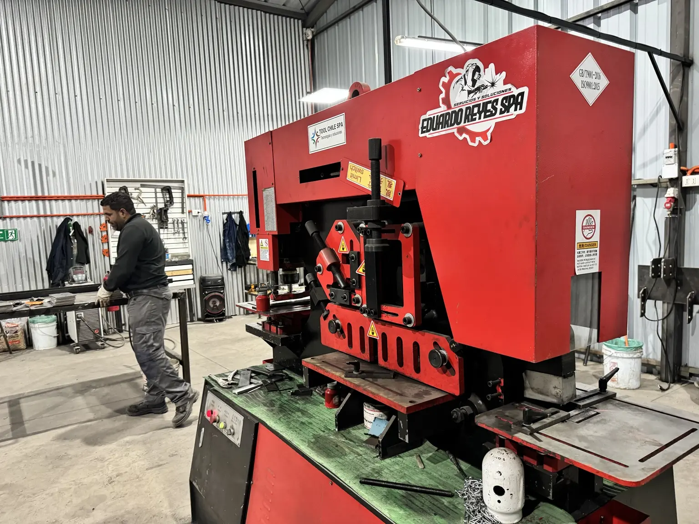
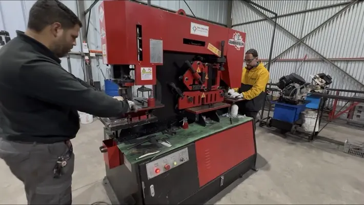
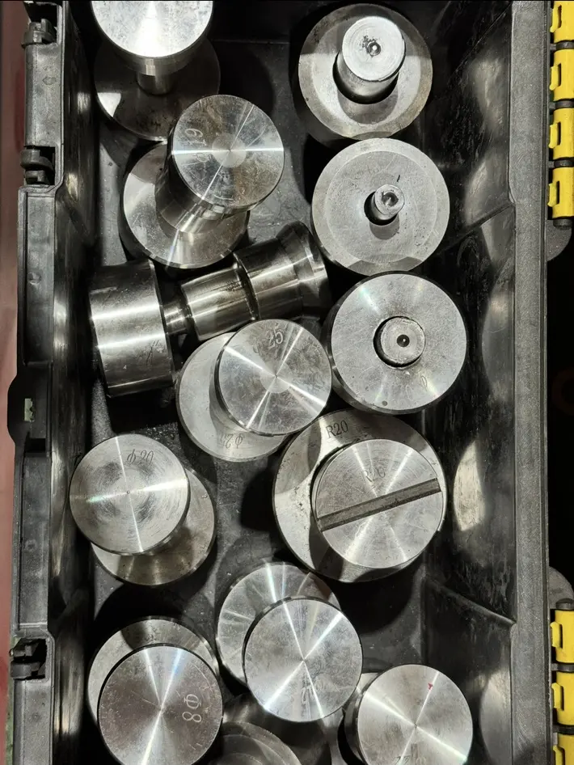
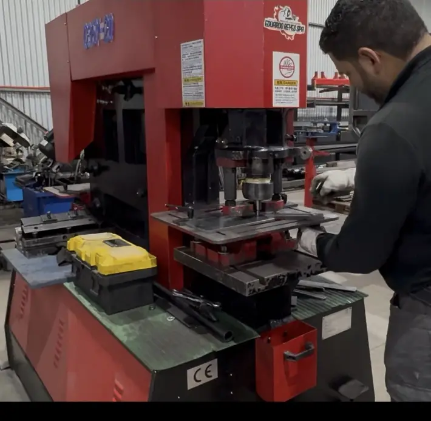
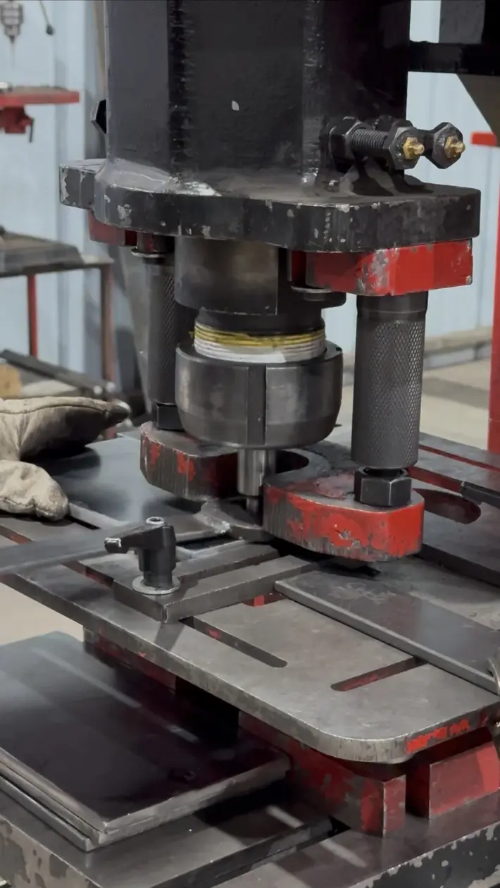
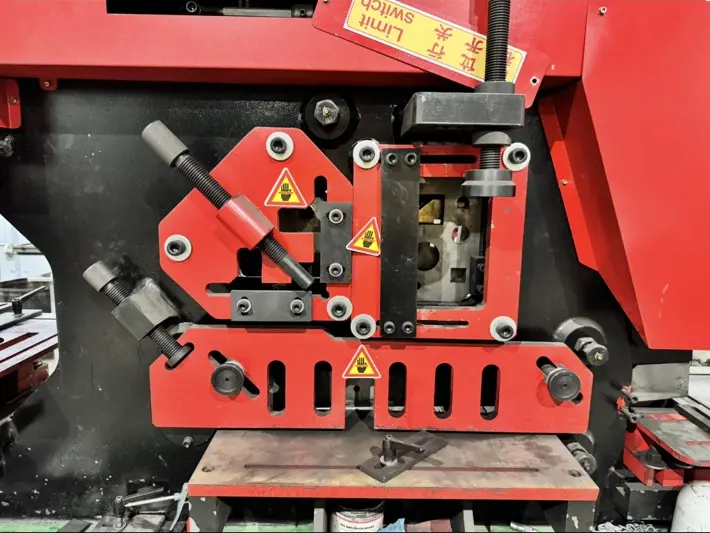
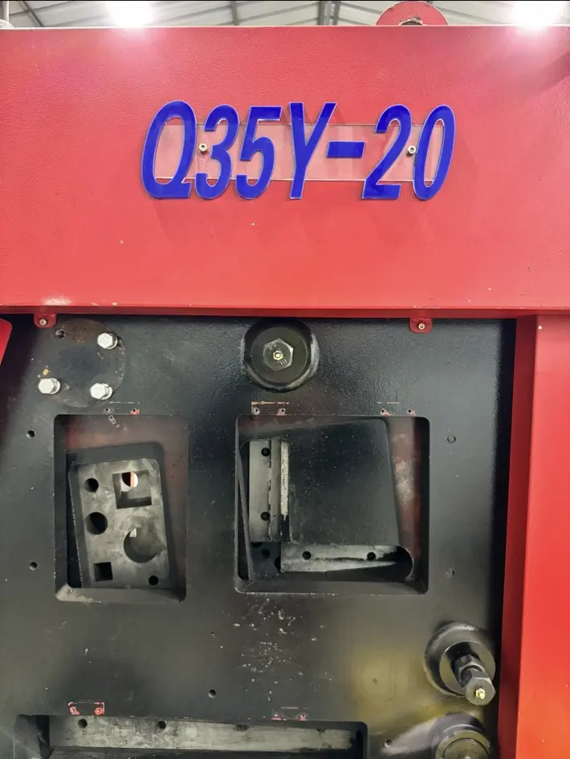
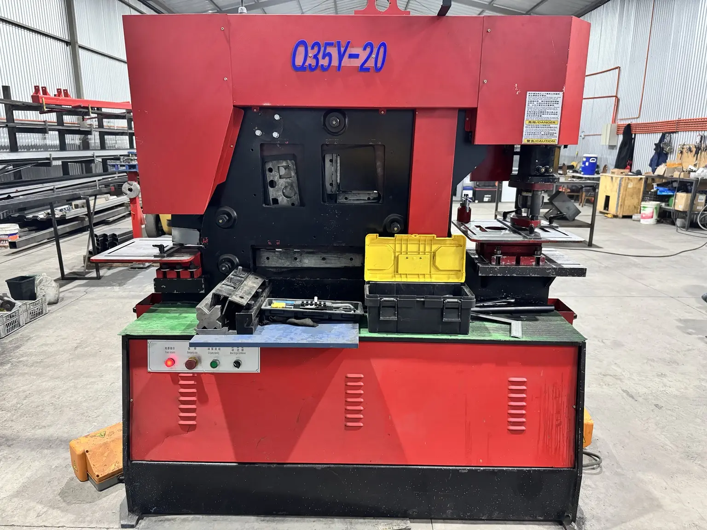
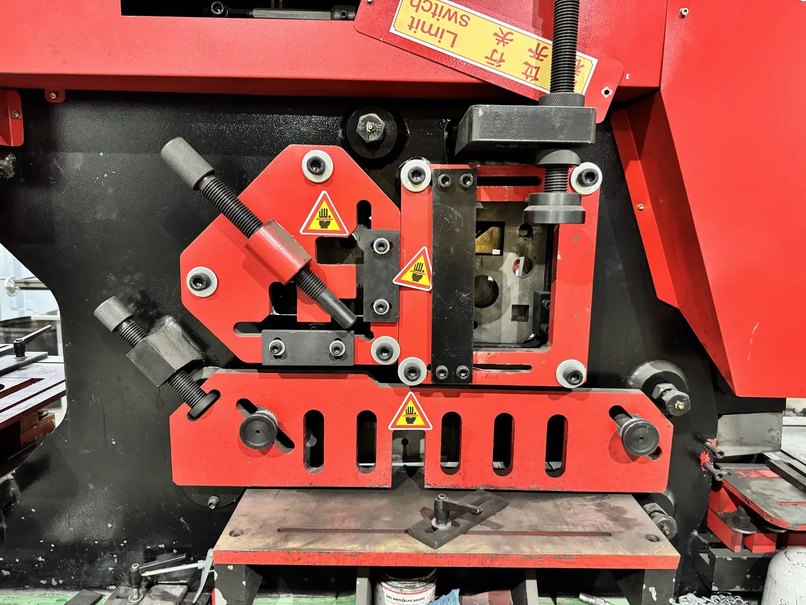

Trabajo real · Corte y conformado
Punzonado y corte hidráulico de metal
Trabajo real con la Q35Y-20 en sus distintas estaciones. En este proceso se recortó primero el material para preparar el perfil que después continuó a la etapa de cilindrado en torno.









Caso documentado
Necesidad, equipos y resultado
- Necesidad
- Perforar, recortar y preparar material con distintas geometrías.
- Equipos
- Punzonadora y cizalla hidráulica combinada Q35Y-20.
- Resultado
- Piezas preparadas para mecanizado, armado o entrega.
Proceso ejecutado
- Recorte inicial del material en la estación de corte o cizallado
- Preparación de un perfil previo con caras planas
- Traslado de la pieza al torno convencional
- Cilindrado exterior hasta obtener el diámetro final